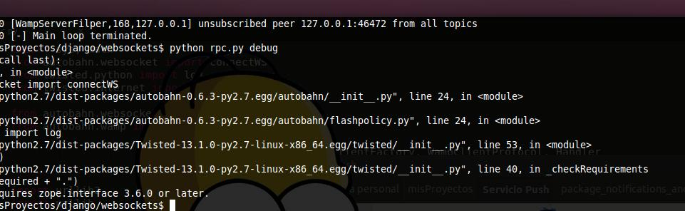
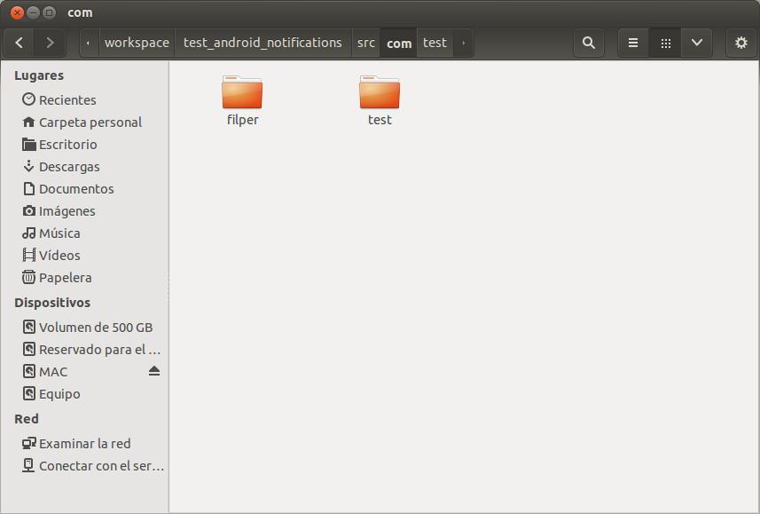

Documentación servicio Push Filper
El servicio fue construido para poder usarse con django, pero puede ser exportado a otros frameworks.
Para su elaboración fue necesario crear:
1.- Servidor Websocket en python, que resolviera llamadas RPC ( Remote Procedural Call) y llamadas WAMP (Websocket Aplication Message Protocol). (servidorWebsocket.py)
2.- Un intermediario de mensajes entre el servidor y los dispositivos conectados creado en nodejs. (cliente_websocket_nodejs)
3.- Aplicacion para django para controlar los mensajes push. (django_app_push)
4. paquete para el control de las notificaciones en android. (package_notifications_android)
A continuacion explicaremos a detalle cada uno de los anteriores paquetes y como implementarlos en una solucion de ejemplo.
servidorWebsocket.py
Es un pequeño pero poderoso script que se encarga de gestionar y resolver todos los eventos sobre los webSockets.
Requerimientos:
Es indispensable tener instalado los siguientes componentes para el correcto funcionamiento del script.
1.- Python 2.7 - Es la realizaron en la que se hicieron las pruebas.
2.- Autobahn – Es la librería principal para hacer funcionar este script, si no la tienes instalada la puedes instalar de la siguiente forma:
Usando el siguiente comando en la consola para instalar: easy_install autobahn
Usando el siguiente comando en la consola para actualizar: easy_install -U autobahn
Correr el script:
Para ejecutar el script es muy sencillo, abrimos una consola de comandos ya sea en Windows o Linux, nos movemos hasta donde tengamos guardado el archivo del script por ejemplo: cd /home/user/servicio_push/. Dentro de la carpeta ejecutamos el archivo con el siguiente comando.
Python servidorWebsocket.py Este comando ejecutara el script pero sin mostrar un debug
Python servidorWebsocket.py debug Este comando ejecutara el script mostrando el debug del script
Si nos llegara a mostrar un error como el siguiente:

Debemos ejecutar el script como súper usuario.
cliente_websocket_nodejs
Se usa como intermediario entre el servidor y los dispositivos conectados, su principal uso es para que el servidor envié notificaciones a paginas web celulares etc.
Requerimientos:
Es indispensable tener instalado los siguientes componentes para poder correr este cliente nodejs.
1.- nodejs 10.20 - Es la versión en la que se realizaron las pruebas.
2.- express 3.4.0" – Es la versión en la que se realizaron las pruebas. Usa el siguiente comando para instalarlo: npm install -g express o sudo npm install -g express
3.- Los otros requerimientos están incluidos en la carpeta node_modules
Correr el cliente nodejs:
Como el trabajo de este cliente es totalmente transparente no tienes que modificar opciones para correrlo, solo ejecuta el siguiente comando dentro del proyecto en donde se encuenta el archivo app.js .
node app.js
django_push
Esta carpeta contiene una aplicación para django, la cual servirá de helper para verificar si el usuario se encuentra conectado en algún dispositivo y también para enviar notificaciones a distintos usuarios.
Requerimientos:
Es indispensable tener instalado los siguientes componentes para poder correr esta aplicación django.
1.- django 1.5.5 - Es la versión en la que se realizaron las pruebas.
NotificationsHelper:
getStatusUser(to)
to: Es el nombre del usuario que deseas conocer su status.
Permite conocer el estado del usuario, si esta conectado o si su servicio en el celular esta funcionando
sendNotification(to, _from, activity, message, title)
to: Es el nombre del usuario al que se le enviara la notificacion
_from: Es el nombre del usuario que deseas conocer su status.
Activity: Es el nombre de la actividad que se abrira en android
message: Es el mensaje que mostrara la notificacion debe ser menor de 100 caracteres
tiitle: Es el titulo de la notificacion debe ser menor a 20 caracteres
Permite enviar notificaciones al usuario deseado
getNotification(userName, order=None)
userName: Nombre de usuario que se desea buscar sus notificaciones
order: Si es None, se mostraran todas las notificaciones, si es True se mostraran todas todas las
notificaciones que no hayan sido vistas, si es false, se mostraran todas las notificaciones vistas
Permite obtener las notificaciones de un usuario con diferentes filtros.
ChangeUserStateConexion(request):
Esta funcion que esta dentro del archivo view, permite que cada vez que se conecte un usuario o se desconecte del servicio push el servidor conozca su estado
Integrar django_push a un proyecto django:
Encontraras un ejemplo en la carpeta de github ejemplos/django
Los puntos claves a hacer es:
1. Agregar la carpeta app_push a tu proyecto django
2. Agregar a tus urls el la siguiente ruta: url(r'', include('push.urls')),
3. Agregar la aplicacion en tu settings.py file: 'django_push',
4. Sincronizar base de datos : python manage.py syncdb
5. Agregar el siguiente import en donde lo necesites:
from django_push.notificationsHelper import *
android_notifications
Esta carpeta contiene el codigo necesario para poder usar las notificaciones en android
Requerimientos:
Es indispensable tener instalado los siguientes componentes para poder usar este paquete para Android
1.- Agregar las siguientes librerías al proyecto: https://autobahn.s3.amazonaws.com/android/autobahn-0.5.0.zip
2. Agregar los .jar al folder libs del proyecto Android
3. Agregar los JARs al java buld path
4.- Agregar el permiso para usar internet en el manifiest: android.permission.INTERNET
<?xml
version="1.0"
encoding="utf-8"?>
<manifest
xmlns:android="http://schemas.android.com/apk/res/android"
...>
<uses-permission
android:name="android.permission.INTERNET">
</uses-permission>
<application
...>
</application>
</manifest>

5.- Agregar el servicio en el android manifiest: <service android:name="com.filper.notifications.WebSocketService" />
<application
...
<service android:name="com.filper.notifications.WebSocketService" />
...
</application>
6.- Copiamos la carpeta filper que se encuentra dentro android_notifications y la pegamos en la carpeta src/com de nuestro proyecto android

Configurando filper_notifications
La mayor partes de las configuraciones serán sobre el archivo WebSocketService.
1.- Lo primero que debemos cambiar sera la linea #8 del archivo WebSocketService que tiene:
import com.filper.app.R;
Con esto pasaremos los recursos a nuestro servicio.
2.- Modificar el valor de la imagen que se mostrara en la notificación cuando llegue un mensaje. Esto se puede realizar en la linea 275 del archivo WebSocketService.
.setSmallIcon(R.drawable.notification_icon)
cambiamos R.drawable.notification_icon, por el icono que agregemos a nuestros recursos
3.- Modificar el nombre del proyecto en la linea #281 del archivo WebSocketService
Intent resultIntent = new Intent(this, Class.forName("com.filper.app."+activity));
Cambiamos "com.filper.app." por el nombre del paquete de nuestro proyecto
4.- Listo tenemos configurado nuestro paquete ahora solo queda hacer los imports en nuestra activity un ejemlo de esto lo puedes encontrar en la carpeta ejemplos/websocket
Integrar django_push a un proyecto django:
Encontraras un ejemplo en la carpeta de github ejemplos/django
Los puntos claves a hacer es:
1. Agregar la carpeta app_push a tu proyecto django
2. Agregar a tus urls el la siguiente ruta: url(r'', include('push.urls')),
3. Agregar la aplicacion en tu settings.py file: 'django_push',
4. Sincronizar base de datos : python manage.py syncdb
5. Agregar el siguiente import en donde lo necesites:
from django_push.notificationsHelper import *